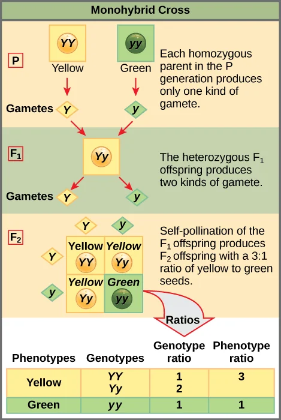

Mendelian Genetics and Punnett Squares
TEAS objective S.2.3 · Biology
What the TEAS expects: you can use genetics vocabulary correctly, set up a Punnett square, and predict genotype and phenotype ratios for a single trait.
1. Vocabulary
Swipe the table sideways to see every column. →
| Term | Meaning | Example |
|---|---|---|
| Gene | A section of DNA with the instructions for one protein; genes underlie traits | Gene for seed color |
| Allele | One version of a gene | Y (yellow) or y (green) |
| Dominant | Shows when at least one copy is present; capital letter | Y |
| Recessive | Shows only when two copies are present; lowercase letter | y |
| Genotype | The alleles an individual has | YY, Yy or yy |
| Phenotype | The trait you can observe | Yellow or green |
| Homozygous | Two identical alleles | YY (homozygous dominant), yy (homozygous recessive) |
| Heterozygous | Two different alleles | Yy (a "carrier" of the recessive allele) |
Memory hook: genotype = the genes (letters); phenotype = what appears.
2. Mendel's laws
- Law of dominance: in a heterozygote, the dominant allele hides the recessive one.
- Law of segregation: each parent has two alleles for a gene but passes only one to each offspring. The two alleles separate when gametes form (in meiosis).
- Law of independent assortment: alleles for different genes (on different chromosomes) are sorted into gametes independently of each other.
3. Setting up a Punnett square
- Write each parent's genotype.
- Put one parent's two alleles across the top and the other parent's down the side.
- Fill each box with one allele from the top and one from the side.
- Count the boxes. Each box is a 1-in-4 (25%) chance.
In the figure, P is the parent generation, F1 their offspring, and F2 the offspring of two F1 plants.

Tap or click the figure to open it full size.
The four crosses to know (dominant A, recessive a):
Swipe the table sideways to see every column. →
| Cross | Genotypes of offspring | Phenotypes |
|---|---|---|
| AA × aa | All Aa | All dominant |
| Aa × Aa | 1 AA : 2 Aa : 1 aa | 3 dominant : 1 recessive |
| Aa × aa | 1 Aa : 1 aa | 1 dominant : 1 recessive |
| AA × Aa | 1 AA : 1 Aa | All dominant |
Check 1: Brown eyes (B) are dominant over blue (b). A heterozygous brown-eyed parent and a blue-eyed parent have a child. What is the chance the child has blue eyes? Answer at the bottom of the page.
4. Beyond simple dominance
- Incomplete dominance: the heterozygote is a blend. Red × white snapdragons give pink. Pink × pink gives 1 red : 2 pink : 1 white.
- Codominance: both alleles show fully. ABO blood type: alleles A and B are codominant and O is recessive. Type A can be AA or AO; type B can be BB or BO; type AB is AB; type O is OO.
- Sex-linked (X-linked) traits: the gene is on the X chromosome. Males (XY) have only one X, so a single recessive allele shows. This is why color blindness and hemophilia are more common in males. Example: a carrier mother (XᴴXʰ) and an unaffected father (XᴴY) have a 1 in 2 chance that each son has hemophilia, and no daughter will have it (each daughter has a 1 in 2 chance of being a carrier).
Check 2: A red-flowered plant crossed with a white-flowered plant produces only pink-flowered offspring. What pattern of inheritance is this? Answer at the bottom of the page.
Common traps
- Mixing up genotype and phenotype. "Tt" is a genotype; "tall" is a phenotype.
- Reading 3:1 as a genotype ratio. For Aa × Aa, 3:1 is the phenotype ratio; the genotype ratio is 1:2:1.
- Thinking ratios are guarantees. Each child has the same odds; a family with four children won't necessarily show 3:1.
- Confusing incomplete dominance and codominance. Blend = incomplete; both visible = codominance.
Learn it properly
- Mendel's experiments: OpenStax Concepts of Biology, Section 8.1 Mendel's Experiments: OpenStax (opens in a new tab)
- Punnett squares and Mendel's laws: Section 8.2 Laws of Inheritance: OpenStax (opens in a new tab)
- Incomplete dominance, codominance and sex-linked traits: Section 8.3 Extensions of the Laws of Inheritance: OpenStax (opens in a new tab)
Check answers
- 1/2 (50%). Bb × bb gives Bb, Bb, bb, bb: two of four boxes are bb.
- Incomplete dominance. The heterozygote is a blend of the two parents.
ESCC TEAS Prep · Original study material written for Eastern Shore Community College. Figures from OpenStax, Concepts of Biology, licensed CC BY 4.0.